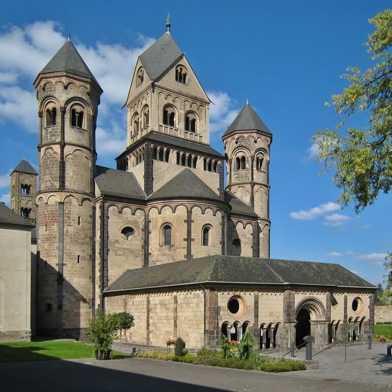
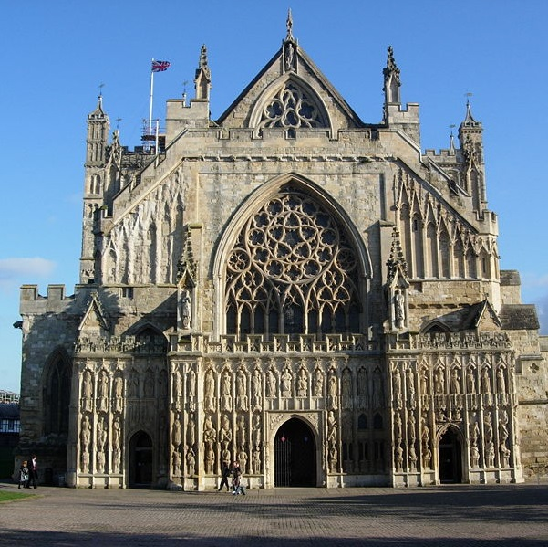
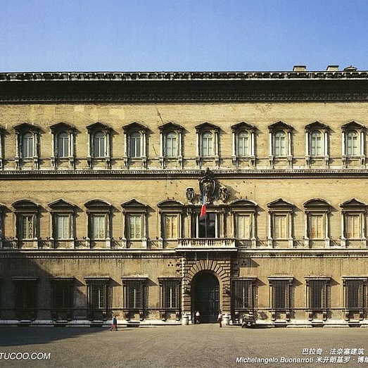
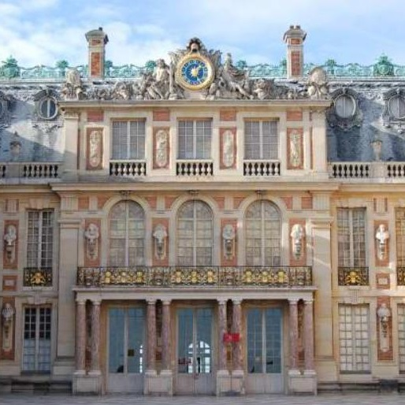
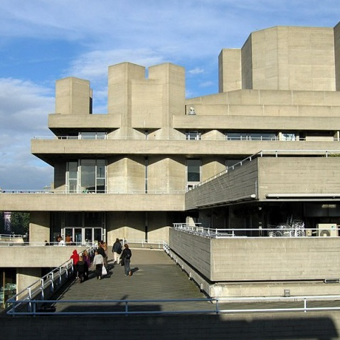
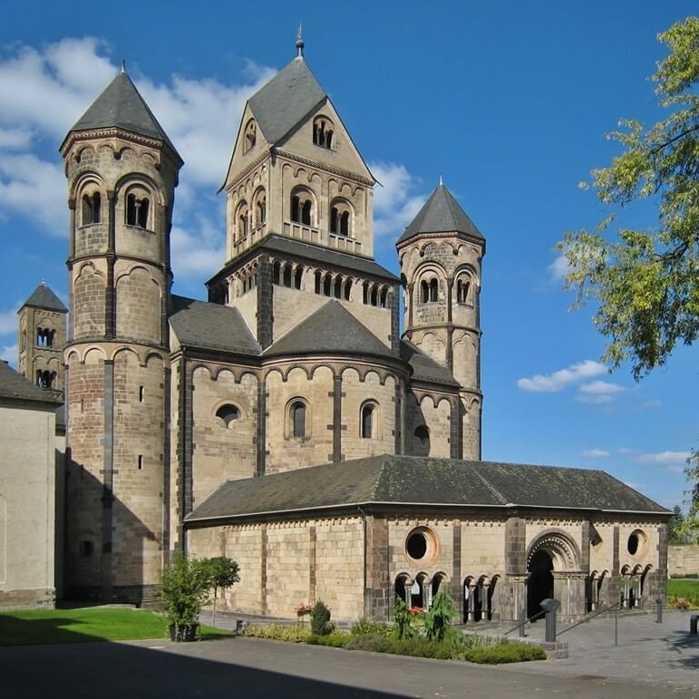
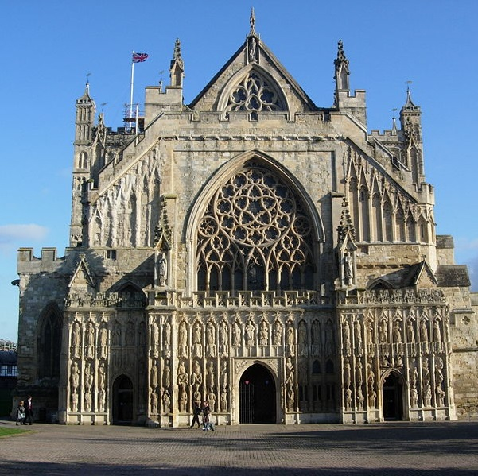
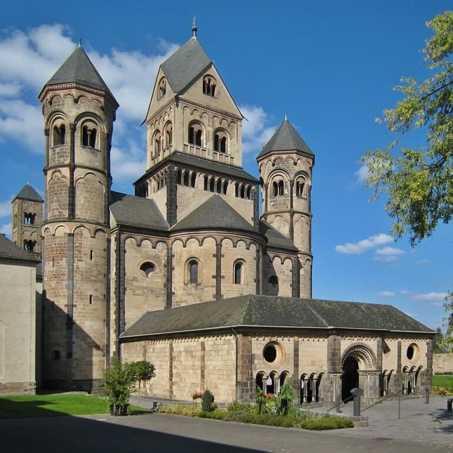
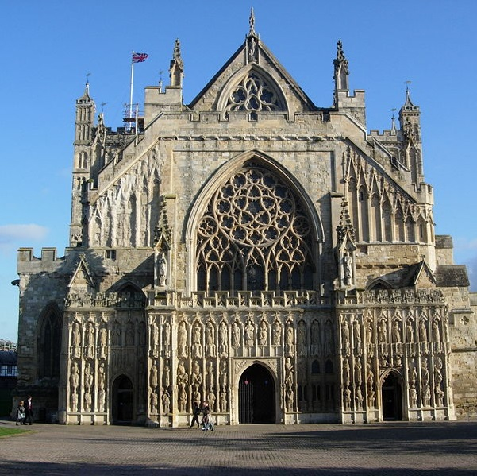

Главная
Блог
Контакты
Здравствуйте, добро пожаловать на мой сайт! Здесь вы можете ознакомится с некоторыми архитектурными стилями и тем самым расширить свой кругозор. Архитекту́ра, или зо́дчество — искусство и наука строить, проектировать здания и сооружения (включая их комплексы), а также сама совокупность зданий и сооружений, создающих пространственную среду для жизни и деятельности человека. Архитектура создает материально организованную среду, необходимую людям для их жизни и деятельности, в соответствии с их устремлениями, а также современными техническими возможностями и эстетическими воззрениями. В архитектуре взаимосвязаны функциональные (назначение, польза), технические (прочность, долговечность) и эстетические (красота) свойства объектов. Архитектурные работы часто воспринимаются как произведения искусства, как культурные или политические символы. Исторические цивилизации характеризуются своими архитектурными достижениями. Архитектура позволяет выполняться жизненным функциям общества, в то же время направляет жизненные процессы. Однако архитектура создается в соответствии с возможностями и потребностями людей. На сайте вы можете ознакомится с некоторыми архитектурными стилями.
Древний мир

Романский стиль

Готика

Возрождение

Классицизм

Модернизм
Мы в соц.сетях:

.jpg "Пирами́да Хеопса (Хуфу) или Великая пирамида Гизы — крупнейшая из египетских пирамид, памятник архитектурного искусства Древнего Египта; единственное из «Семи чудес света», сохранившееся до наших дней, и самое древнее из них: её возраст оценивается примерно в 4500 лет.") Древний мир
Романский стиль
Готика
Древний мир
Романский стиль
Готика